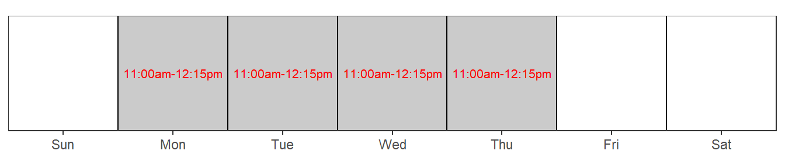
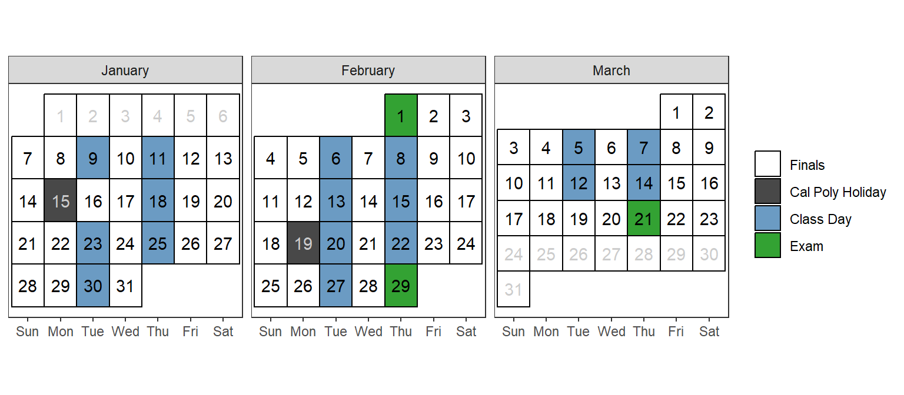

Stat 331/531: Statistical Computing with R
Winter 2024
Communication
Dr. Immanuel Williams
Email: imwillia@calpoly.edu
Office: Building 25 Office 113 (by Statistics Department Office)
Course Logistics
Class Meeting Times: Tuesdays/Thursdays
- Section 72: 4:10pm - 6:00pm
Room: 38-0123 (Math & Science)
Learning Hours are held in my office (25-113) during the following times:
Note that learning hours are not just for when you have content questions. Stop by to introduce yourself, ask questions about the broader field of statistics, or share what you are working on!
Course Description
Stat 335/531 provides you with an introduction to programming for data and statistical analysis. The course covers basic programming concepts necessary for statistics, good computing practice, and use of built-in functions to complete basic statistical analyses.
Prerequisites
Entrance to STAT 331/531 requires successful completion of:
- a Stat II qualifying course, and
- an introductory programming course.
Learning Objectives
This course will teach you the foundations of statistical computing principles in the language of R.
After taking this course, you will be able to:
- Work with the RStudio Integrated development environment (IDE) and quarto documents.
- Import, manage, and clean data from a wide variety of data sources.
- Visualize and summarize data for informative exploratory data analysis and presentations.
- Write efficient, well-documented, and tidy
Rcode. - Build an Shiny applications to be able to display visualizations and tables.
Additionally, it is my hope that you will learn to:
- Extend your
Rskills independently through documentation and online resources. - Be thoughtful, deliberate, and ethical in your use of
Rand similar tools. - Use R to be playful, creative, and fun!
- Contribute to and participate in the R Open Source Community.
Course Tools
Textbook
There is an abundance of free online resources for learning programming and R. Therefore, the primary text for this course is a compilation of various resources - it is available for free at https://gato365.github.io/stat331-calpoly-text/.
This text has been modified from material by Dr. Susan VanderPlas. See Statistical Computing using R and Python for her course book with integration of content and videos from Dr. Allison Theobold and Dr. Kelly Bodwin.
In addition, you may find it useful to reference some of the following resources that I have consulted while assembling the text. Most are available online for free.
Although you may always work on the Studio computers, I strongly recommend that you use your own personal laptop for this course if you have one.
Chromebooks and iPads will not be sufficient to use R. If this requirement is limiting for you, please contact me ASAP.
Class Schedule & Topic Outline
This schedule is tentative and subject to change.

| Date | Topic |
|---|---|
| Jan 9, Jan 11 | Introduction to R |
| Jan 18 | Tidy Data + Basics of Graphics |
| Jan 23, Jan 25 | Data Cleaning and Manipulation (dplyr) |
| Jan 30 | Data Transformations + Factors (tidyr + forcats) |
| Feb 1 | Midterm Exam 1 |
| Feb 6, Feb 8 | Special Data Types (stringr + lubridate) |
| Feb 13, Feb 15 | Shiny Applications |
| Feb 20, Feb 22 | Functions |
| Feb 27 | Functional Programming (purrr) |
| Feb 29 | Midterm Exam 2 |
| Mar 5, Mar 7 | Version Control (Git/GitHub) |
| Mar 12, Mar 14 | Final Project |
| Mar 21 | Final Exam |
Note: Please note that our textbook is currently being updated to include additional chapters that are essential for our course. I appreciate your patience and understanding as these updates are made throughout the quarter.
Final Exam on Thursday, March 21:
- Section 72 at 7:10pm –10:00pm
Course Policies
Assessment/Grading
Your grade in STAT 331/531 will contain the following components:
| Assignments | Weight |
|---|---|
| Weekly Journal Quizzes | 5% |
| Check-ins | 5% |
| Practice Activities | 10% |
| Midterm Exams | 20% |
| Lab Assignments | 25% |
| Final Project | 25% |
| Final Exam | 10% |
Lower bounds for grade cutoffs are shown in the following table. I will not “round up” grades at the end of the quarter. See this social media thread for advice on “Playing the lines. Don’t be there.”
| Letter grade | X + | X | X - |
|---|---|---|---|
| A | . | 93 | 90 |
| B | 87 | 83 | 80 |
| C | 77 | 73 | 70 |
| D | 67 | 63 | 60 |
| F | <60 |
Interpretation of this table:
- A grade of 85 will receive a B.
- A grade of 77 will receive a C+.
- A grade of 70 will receive a C-.
- Anything below a 60 will receive an F.
General Evaluation Criteria
In every assignment, discussion, and written component of this class, you are expected to demonstrate that you are intellectually engaging with the material. I will evaluate you based on this engagement, which means that technically correct but low effort answers which do not demonstrate engagement or understanding will receive no credit.
When you answer questions in this class, your goal is to show that you either understand the material or are actively engaging with it. If you did not achieve this goal, then your answer is incomplete, regardless of whether or not it is technically correct. This is not to encourage you to add unnecessary complexity to your answer - simple, elegant solutions are always preferable to unwieldly, complex solutions that accomplish the same task.
While this is not an English class, grammar and spelling are important, as is your ability to communicate technical information in writing; both of these criteria will be used in addition to assignment-specific rubrics to evaluate your work.
Assignment Breakdown
A. Weekly Reflection Journal
Objective: This journal is designed to enhance your learning experience in statistical computing. By actively documenting your progress, reflecting on challenges, and acknowledging your achievements, you will deepen your understanding and improve your problem-solving skills in R programming.
Components of the Journal:
Quarto File – ‘The Journal’:
- Each week, you will maintain a digital journal in a Quarto file. This journal is your space to document new R functions you’ve learned, errors encountered, and reflections on your learning journey.
- Weekly Entries:
- Function Log: Note any new R functions you learn each week, detailing their purpose and an example of their usage.
- Error Diary: Record any significant errors you encounter, describe the issue, and explain how you resolved it. This diary will serve as a valuable resource for troubleshooting. Throughout the course, students are likely to encounter various errors, both minor and significant. Initially, log all errors, including omitted arguments, to build a strong foundation; as proficiency increases, focus on documenting more complex and conceptually challenging errors.
- Reflection: Pen a brief reflection on your learning experiences, the challenges you faced, and how you plan to apply or improve upon this knowledge in the future.
Weekly Quiz:
- To complement your journaling and ensure consistent engagement, a brief, three-question quiz will be administered each week. This quiz reflects on the information entered into your journal.
- Quiz Format:
- One question about a newly learned R function.
- One question about a noteworthy error you encountered and resolved.
- One question about a significant aspect of your learning journey.
- Purpose: The quiz is not graded for correctness but serves as a mechanism of accountability. It encourages you to thoroughly engage with your journal entries and reflect on your weekly learning experiences.
- Submission and Grading: Quizzes will be submitted via Canvas and are due every Sunday at 11:59 pm. They are graded based on completion, emphasizing the importance of regular reflection and participation.
Example Journal
- An example Quarto Journal will be provided on Canvas. Your journal will not be graded but your quizzes
- All responses to Check-ins are due Sundays at 11:59 pm.
B. Check-ins
Each week, you will find short Check-In questions or tasks throughout the text to make sure you are prepared for class that week. Make sure you submit your answers to these on Canvas to get credit for your efforts. Note that the Canvas Check-in quizzes can be submitted up to three times without a penalty - so you should get 100% on this part of the course!
- All responses to Check-ins are due Tuesdays at 8:00am.
C. Practice Activities
Most Tuesday’s, you will be given a Practice Activity to complete, to get the hang of the week’s necessary R skills. These activities will always result in a single, straightforward correct answer, that you will submit via Canvas (one attempt). Therefore, there is no reason you should not get full credit in this category!
Since these activities are intended to be your first attempt at new skills, they are meant to be done with help from me and your peers. Therefore, you will always be given some time in class to work on them.
- Practice Activities are due Thursdays at 8:00am.
D. The Midterms
This course includes two midterms, both of which are cumulative in nature. The purpose of these exams is to assess your understanding of the material covered and your ability to apply R programming skills in various contexts. The first midterm is scheduled for February 1, 2024, and will cover the initial chapters of the course. The second midterm is on February 29, 2024, and will include all content up to that date. These midterms are designed not just to test your knowledge, but also to strengthen your ability to think critically and process code effectively under different circumstances.
- Midterm 1 is on Thursday 2/1/2024 at 4:10pm
- Midterm 2 is on Thursday 2/29/2024 at 4:10pm.
E. Lab Assignments
Your typical homework assignments will be weekly labs. You will follow each lab’s instructions to complete tasks in R and submit a rendered .html Quarto document to Canvas.
Most weeks, there will be class time on Thursdays dedicated to working on completing lab assignments.
- Labs are due on Mondays at 11:59pm.
F. The Final Project
The capstone of our course is a final project where you will develop an R Shiny application, choosing from one of the following thematic areas: Spotify, Sports, Census Data, or Finance Data. This project is a culmination of all the concepts and techniques learned throughout the course, presented through a practical lens. Each chapter of the textbook contributes to the skills and knowledge you will apply in this project, making it an integrative and hands-on experience. The aim is not only to solidify your understanding of R but also to showcase your ability to create a real-world application that leverages the powerful features of R Shiny.
G. The Final Exam
The final exam, scheduled for March 21, 2024 in this room, will be comprehensive, encompassing all the topics we have covered throughout the course. While the exam is cumulative, it is not weighted as heavily as the final project. This structure is intentional, as the course places a greater emphasis on the practical application of skills and knowledge through the final project. The final exam serves as an opportunity to reinforce and demonstrate your overall understanding of statistical computing with R.
- The final is on Thursday 3/21/2024 at 7:10pm - 10:00pm
Attendance & Participation
I do not take formal attendance in this class. However, it is my expectation that you remain in class and on task until you have finished all your activities and assignments. Consistent, repeated failure to attend class or actively participate in portions of the course will affect the demonstration of your engagement with the course.
If you are feeling ill, please do not come to class. Instead, email me, review the material and work on the participation activity and weekly lab assignment; then schedule an appointment with me to meet virtually.
Late Policy
Given the importance of maintaining consistency and fairness for all students, this course has a strict policy regarding deadlines. It is essential that you manage your time effectively and meet all assignment deadlines.
No Late Work Accepted
- Strict Deadlines: Assignments must be submitted by their specified deadlines. Late submissions will not be accepted under any circumstances.
- Responsibility: It is your responsibility to stay on top of your work and adhere to the schedule. Plan ahead to ensure you can meet all deadlines.
- Exceptions: There will be no “grace days” or penalty-free extensions. This policy is in place to encourage timely submission and to ensure that all students are treated equally.
Managing Your Workload
- Plan Ahead: Keep track of all due dates and plan your work schedule accordingly. Avoid last-minute submissions to ensure the quality of your work.
- Stay Informed: Regularly check course announcements and email communications for any updates on assignments or deadlines.
Extenuating Circumstances
- While no late work is accepted, I understand that unforeseen circumstances can occur. If you have a serious issue that might affect your ability to meet a deadline, please contact me as soon as possible before the due date to discuss your situation.
Extra Credit Opportunity
If you see me on campus, you know me. Ask me a statistical question. You will fill out this survey an I will give points to you at the end of quarter.
I currently do not know how many points.
Course Expectations
You will get out of this course what you put in. The following excerpt was taken from Rob Jenkins’ article “Defining the Relationship” which was published in The Chronicle of Higher Education (August 8, 2016). This accurately summarizes what I expect of you in my classroom (and also what you should expect of me).
“I’d like to be your partner. More than anything, I’d like for us to form a mutually beneficial alliance in this endeavor we call education.
I pledge to do my part. I will:
- Stay abreast of the latest ideas in my field.
- Teach you what I believe you need to know; with all the enthusiasm I possess.
- Invite your comments and questions and respond constructively.
- Make myself available to you outside of class (within reason).
- Evaluate your work carefully and return it promptly with feedback.
- Be as fair, respectful, and understanding as I can humanly be.
- If you need help beyond the scope of this course, I will do my best to provide it or see that you get it.
In return, I expect you to:
- Show up for class each day or let me know (preferably in advance) if you have some good reason to be absent.
- Do your reading and other assignments outside of class and be prepared for each class meeting.
- Focus during class on the work we’re doing and not on extraneous matters (like whoever or whatever is on your phone at the moment).
- Participate in class discussions.
- Be respectful of your fellow students and their points of view.
- In short, I expect you to devote as much effort to learning as I devote to teaching.
What you get out of this relationship is that you’ll be better equipped to succeed in this and other college courses, work-related assignments, and life in general. What I get is a great deal of professional and personal satisfaction. Because I do really like you [all] and want the best for you.”
Sign Contract
- Take time to read this document from time to time to feel empowered by this class and our effort to make this class an experience.
Make Mistakes!
Programming is the process of making a series of silly or stupid mistakes, and then slowly fixing each mistake (while adding a few more). The only way to know how to fix these mistakes (and avoid them in the future) is to make them. (Sometimes, you have to make the same mistake a few dozen times before you can avoid it in the future). At some point during the class, you will find that you’ve spent 30 minutes staring at an error caused by a typo, a space, a parenthesis in the wrong place. You may ask for help debugging this weird error, only to have someone immediately point out the problem… it is always easier to see these things in someone else’s code. This is part of programming, it is normal, and you shouldn’t feel embarrassed or sorry (unless you put no effort into troubleshooting the problem before you asked for help)
If you manage to produce an error I haven’t seen before, then congratulations. You have achieved something special, and that achievement should be celebrated. Each new and bizarre error is an opportunity to learn a bit more about the programming language, the operating system, or the interaction between the two.
Learning Environment and Support
I am committed to creating a safe and inclusive learning environment where all students feel respected and supported. If there are any ways I can improve the classroom environment to make it more welcoming for you, please don’t hesitate to let me know.
If you have a disability and require accommodations to fully participate in the course, please contact me as soon as possible to discuss how I can best support you. I also encourage you to register with Cal Poly’s Disability Resource Center (Building 124, Room 119 or at 805-756-1395) to explore additional accommodations that may be available to you.
If you are experiencing food insecurity, housing instability, or other challenges that may impact your ability to succeed in this course, please refer to the resources listed on Canvas under “Student Support Services at Cal Poly.” These resources provide a range of essential support services, including emergency financial assistance, counseling, and academic support.
I am committed to working with you to ensure that you have the resources and support you need to succeed in this course. Let’s work together to create a positive and inclusive learning environment for all students.
Academic Integrity and Class Conduct
Academic integrity is a fundamental value of this course and of the university. Simply put, I will not tolerate cheating, plagiarism, or any other form of academic dishonesty.
Any incident of academic misconduct, including dishonesty, copying, or plagiarism, will be reported to the Office of Student Rights and Responsibilities.
Cheating will earn you a grade of 0% on the assignment and an overall grade penalty of at least 10%. In circumstances of flagrant cheating, you may be given a grade of F in the course.
It is important to note that paraphrasing or quoting another’s work without proper citation is a form of academic misconduct. This includes the R code produced by someone else! Writing code is like writing a paper, it is obvious if you copied-and-pasted a sentence from someone else into your paper because the way each person writes is different.
Even inadvertent or unintentional misuse or appropriation of another’s work (such as relying heavily on source material that is not expressly acknowledged) is considered plagiarism. This includes using Chat GPT, which should only be used to help you problem solve just as a tutor or peer would, and not as a substitute for your own work. If you are struggling with writing the R code for an assignment, please reach out to me. I would prefer that I get to help you rather than you spending hours Googling things and get nowhere!
If you have any questions about using and citing sources, you are expected to ask for clarification.
To ensure academic integrity, please be sure to cite all sources appropriately and only use Chat GPT in an ethical manner. For more information on academic misconduct and what constitutes cheating and plagiarism, please see academicprograms.calpoly.edu/content/academicpolicies/Cheating.
California Faculty Association
The California Faculty Association (the labor union of Lecturers, Professors, Coaches, Counselors, and Librarians across the 23 CSU campuses) is in a difficult contract dispute with California State University management. It is possible that we will call a strike or other work stoppage this term. I promise to promptly inform you of any schedule disruption. Our working conditions are your learning conditions; we seek to protect both. For further information go to www.CFAbargaining.org.
stat-331-syllabus - Stat 331/531: Statistical Computing with R stat-331-syllabus - Stat 331/531: Statistical Computing with R stat-331-syllabus - Stat 331/531: Statistical Computing with R stat-331-syllabus Winter 2024 Winter 2024